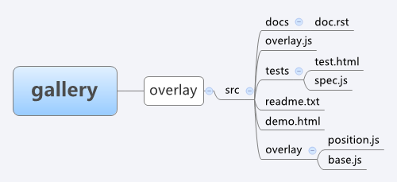

KISSY 组件开发规范¶
by 承玉
开始之前请先阅读 KISSY 组件开发流程.
确定 API¶
首先确定该组件需要公开的 api 接口包括属性名称，函数名，参数以及返回值，可参考 YUI3 ,Jquery 等类库的同类组件，尽量保持一致。 比如 Overlay，那么其公开接口肯定包含方法 show ，``hide`` 以及弹层内容 content 属性配置.
模块编写¶
必须。推荐的目录结构如下，例如组件为 Overlay 弹层，那么该组件的目录结构应为：
src 目录中必须包含和组件名相同的一个模块文件，模块名为 gallery/overlay ,用来指明该组件依赖的子模块，子模块的名约定为 gallery/overlay/xx ,如果组件比较简单也可只有这一个源码文件。例如 overlay.js
KISSY.add("gallery/overlay",function(S,Base){
return Base;
},{
'./overlay/base','./overlay/position'
});
子模块放在 src 模块名为目录名的文件夹内，对于 KISSY 1.2 以前，需要手动将组件挂载到 KISSY 上去并且需要在模块定义处挂载，例如子模块 base.js 的编写：
KISSY.add("gallery/overlay/base",function(S){
function Overlay(){}
//如果需要兼容 KISSY < 1.2，需要手动挂载到 KISSY
S.namespace("Gallery");
S.Gallery.Overlay=Overlay;
return Overlay;
});
子模块间也可有依赖关系，例如子模块 position.js 需要对基本模块 base.js 进行增强 :
KISSY.add("gallery/overlay/position",function(S,Overlay){
//兼容 kissy < 1.2
Overlay = S.Gallery.Overlay;
Overlay.prototype.xx=function(){};
},{
requires:['./base']
});
demo 编写¶
必须。写一个 demo.html 简单展示下这个组件怎么用，静态载入组件的所有依赖js即可，注意被依赖模块js要放在依赖js前面，例如：
<!DOCTYPE HTML>
<html>
<head>
<title>overlay demo</title>
</head>
<body>
<script src='../../../kissy/build/kissy.js'></script>
<script src='base.js'></script>
<script src='position.js'></script>
<script src='overlay.js'></script>
<script>
KISSY.use("gallery/overlay",function(S,Overlay){
// kissy < 1.2 获取
Overlay=S.Gallery.Overlay;
});
</script>
</body>
</html>
readme.txt 编写¶
文档编写¶
可选。在 docs 目录下编写组件文档，后缀名为 rst ，可参照 KISSY Overlay 的文档 api 以及 使用文档 ，详细格式可参见 sphinx 。文档不做强求，也可直接写纯文本格式，在 demo.html 详细讲解即可。
单元测试编写¶
可选。在 tests 目录下编写单元测试代码，单元测试包括两个部分，测试准备页面以及单元测试用例脚本。
测试准备页面¶
编写 test.html ，引入单元测试框架 jasmine (在 kissy/tools/ 下) ，例如：
<!DOCTYPE html>
<html>
<head>
<meta charset="utf-8">
<title>Overlay Test Runner</title>
<link rel="stylesheet" href="../../../tools/jasmine/jasmine.css">
<script src="../../../kissy/tools/jasmine/jasmine.js"></script>
<script src="../../../kissy/tools/jasmine/jasmine-html.js"></script>
<script src="../../../kissy/tools/jasmine/event-simulate.js"></script>
<script src="../../../kissy/build/kissy.js"></script>
</head>
<body>
<script src='base.js'></script>
<script src='position.js'></script>
<script src='overlay.js'></script>
<script src="overlay-spec.js"></script>
<script>
jasmine.getEnv().addReporter(new jasmine.TrivialReporter());
jasmine.getEnv().execute(function() {
if (parent && parent.jasmine.kissyNext) {
parent.jasmine.kissyNext(this.results().failedCount);
}
});
</script>
</body>
</html>
测试用例脚本编写¶
测试用例编写在脚本 overlay-spec.js 中，详细可参考 jasmine wiki ，这里简单举个例子：
// 测试用例脚本可以包含很多 suit
describe("开始一个 suit",function(){
// 一个 suit 包含很多 spec
it("开始一个 spec",function(){
/*
一个 spec 包含很多 expectation
*/
expect("xx").toBe("xx");
expect("yy").toBe("yy");
});
});
复杂点的例子可以看 KISSY.Overlay Unit Test